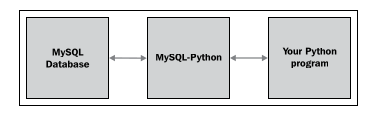
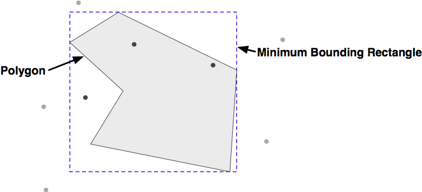
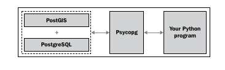
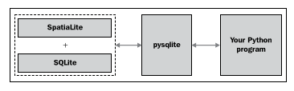

支持空间功能的开源数据库#
Open source spatially-enabled databases
如果您希望使用开源数据库进行地理空间开发工作，目前有三个主要选项： MySQL、 PostGIS 和 SpatiaLite。每个选项都有自己的优点和缺点，没有一个数据库是所有情况下的理想选择。让我们仔细看看这些支持空间功能的数据库。
If you wish to use an open source database for your geospatial development work, you currently have three main options: MySQL, PostGIS and SpatiaLite. Each has its own advantages and disadvantages, and no one database is the ideal choice in every situation. Let’s take a closer look at each of these spatially-enabled databases.
MySQL#
MySQL
MySQL 是全球最流行的开源数据库，也是一个功能非常强大的数据库。尽管 MySQL 也支持空间功能，但它有一些限制，我们稍后会详细讨论。
MySQL 数据库服务器可以从 http://mysql.com/downloads 网站下载，支持多种操作系统，包括 MS Windows、Mac OS X 和 Linux。下载后，运行安装程序会设置好所需的一切，您可以通过命令行直接访问 MySQL：
% mysql
Welcome to the MySQL monitor.
Commands end with ; or \g.
Your MySQL connection id is 14
Server version: 5.5.28 MySQL Community Server (GPL)
Copyright (c) 2000,2012, Oracle and/or its affiliates. All rights
reserved.
Oracle is a registered trademark of Oracle Corporation and/or its
affiliates. Other names may be trademarks of their respective owners.
Type 'help;' or '\h' for help. Type '\c' to clear the current input
statement.
mysql>
要在 Python 程序中访问 MySQL，您需要安装 MySQL-Python 驱动程序，可以从 http://sourceforge.net/projects/mysql-python 下载。您可以下载 Mac OS X 和 Linux 的源代码版本，以及适用于 Python 2.7 的 MS Windows 安装程序。如果需要 MS Windows 下早期版本的 Python 安装程序，可以从 http://www.codegood.com 获取。
MySQL-Python 驱动程序充当 MySQL 与 Python 程序之间的接口：
{kind=link}
安装 MySQL-Python 驱动程序后，您将可以通过 MySQLdb 模块使用它。以下是一个如何在 Python 程序中使用此模块的示例：
import MySQLdb
connection = MySQLdb.connect(user="...", passwd="...")
cursor = connection.cursor()
cursor.execute("USE myDatabase")
cursor.execute() 方法允许您执行任何 MySQL 命令，就像使用 MySQL 命令行客户端一样。MySQLdb 完全兼容 Python 数据库 API 规范 ( http://www.python.org/dev/peps/pep-0249 )，使您可以在 Python 程序中访问 MySQL 的所有功能。
学习如何在 Python 中使用数据库超出了本书的范围。如果您以前没有使用过兼容 DB-API 的数据库，您可以查看许多可用的教程，例如： Python 数据库访问教程 。此外， Python 数据库编程 Wiki 页面 和 MySQLdb 的用户指南 ( MySQLdb 文档 ) 也包含了有用的信息。
MySQL 内置了空间功能。例如，以下 MySQL 命令创建了一个包含多边形的新数据库表：
CREATE TABLE cities (
id INTEGER AUTO_INCREMENT PRIMARY KEY,
name CHAR(255),
outline POLYGON NOT NULL,
INDEX (name),
SPATIAL INDEX (outline)) ENGINE=MyISAM
请注意，如果要使用空间索引，必须指定 MyISAM 存储引擎。从 MySQL 5.5 版本开始，默认存储引擎从 MyISAM 更改为 InnoDB，因此在创建空间数据库表时，您现在需要显式指定引擎。
请注意，POLYGON 是一个有效的列类型，您可以直接在几何图形上创建空间索引。这使得您可以执行如下查询：
SELECT name FROM cities WHERE MBRContains(outline, myLocation)
上面的查询将返回所有通过 MBRContains() 函数确定给定位置位于城市轮廓内的城市。
这让我们遇到使用 MySQL 作为空间数据库的第一个大缺点：MBR 在 MBRContains() 函数中的含义是 最小边界矩形。MBRContains() 函数并不真正判断点是否在多边形内；相反，它判断点是否位于多边形的最小边界矩形内：
{kind=link}
正如您所看到的，深色点位于最小边界矩形内，而浅色点则在矩形外。这意味着 MBRContains() 函数会产生假阳性，即，返回那些位于边界矩形内但实际上位于多边形外的点。
MySQL 5.6 版本将消除这个限制，但截至本文写作时，5.5 版本仍然是当前的稳定版本，5.6 版本（以及相关的 Python 驱动程序）可能需要一段时间才能发布。
在您完全放弃 MySQL 之前，考虑一下这个边界矩形计算所带来的好处。如果您有一百万个点并且需要快速确定哪些点位于给定的多边形内，MBRContains() 函数通过首先检查哪些点在多边形的边界矩形内，从而将可能的点数减少到很少的一部分。然后，您可以从数据库中提取多边形，并使用类似 Shapely 的 polygon.contains(point) 方法对这些剩余的点执行最终计算，如下所示：
# 获取我们想要比较的多边形：
cursor.execute("SELECT AsText(outline) FROM cities WHERE...")
wkt = cursor.fetchone()[0]
polygon = shapely.wkt.loads(wkt)
pointsInPolygon = []
# 在多边形的最小边界矩形内查找坐标：
cursor.execute("SELECT X(coord),Y(coord) FROM coordinates " +
"WHERE MBRContains(GEOMFromText(%s), coord)",
(wkt,))
for x,y in cursor:
# 判断该点是否真的位于多边形内。
point = shapely.geometry.Point(x, y)
if polygon.contains(point):
pointsInPolygon.append(point)
如您所见，我们首先请求数据库找到所有位于多边形最小边界矩形内的点，然后检查每个返回的点是否实际位于多边形内。这种方法需要更多的工作，但可以完成任务，并且（对于典型的多边形形状）将非常高效且可扩展。
MySQL 也有其他缺点——空间函数的范围更为有限，且性能有时可能成为问题——但它有两个主要优势，使其成为地理空间开发的有力竞争者：
MySQL 非常流行，因此，如果您使用托管服务器或已经为您设置了计算机，那么 MySQL 很可能已经安装好。尤其是托管服务提供商，可能会不愿意为您安装其他数据库服务器。
MySQL 是最容易安装、设置和管理的数据库。其他数据库（特别是 PostgreSQL）往往更加难以正确设置和使用。
MySQL is the world’s most popular open source database, and is generally an extremely capable database. It is also spatially-enabled, though with some limitations, which we will get to in a moment.
The MySQL database server can be downloaded from http://mysql.com/ downloads for a variety of operating systems, including MS Windows, Mac OS X, and Linux. Click on the MySQL Community Server link to download the server.
Once downloaded, running the installer will set up everything you need, and you can access MySQL directly from the command line:
% mysql
Welcome to the MySQL monitor.
Commands end with ; or \g.
Your MySQL connection id is 14
Server version: 5.5.28 MySQL Community Server (GPL)
Copyright (c) 2000,2012, Oracle and/or its affiliates. All rights
reserved.
Oracle is a registered trademark of Oracle Corporation and/or its
affiliates. Other names may be trademarks of their respective owners.
Type 'help;' or '\h' for help. Type '\c' to clear the current input
statement.
mysql>
To access MySQL from your Python programs, you need the MySQL-Python driver, which is available from http://sourceforge.net/projects/mysql-python. You can download the driver in source code format for Mac OS X and Linux, as well as MS Windows installers for Python version 2.7. If you need MS Windows installers for earlier versions of Python, these are available at http://www.codegood.com.
The MySQL-Python driver acts as an interface between MySQL and your Python programs:
Once you have installed the MySQL-Python driver, it will be available as a module named MySQLdb. Here is an example of how you might use this module from within your Python programs:
import MySQLdb
connection = MySQLdb.connect(user="...", passwd="...")
cursor = connection.cursor()
cursor.execute("USE myDatabase")
The cursor.execute() method lets you execute any MySQL command, just as if you were using the MySQL command-line client. MySQLdb is also completely compatible with the Python Database API specification (http://www.python.org/ dev/peps/pep-0249) and allows you to access all of MySQL’s features from within your Python programs.
Learning how to use databases within Python is beyond the scope of this book. If you haven’t used a DB-API compatible database from Python before, you may want to check out one of the many available tutorials on the subject, for example: http://tutorialspoint.com/python/python_database_access.htm. Also, the Python Database Programming Wiki page (http://wiki.python.org/moin/ DatabaseProgramming) and the users guide for MySQLdb (http://mysql-python. sourceforge.net/MySQLdb.html) have useful information.
MySQL comes with spatial capabilities built in. For example, the following MySQL command creates a new database table that contains a polygon:
CREATE TABLE cities (
id INTEGER AUTO_INCREMENT PRIMARY KEY,
name CHAR(255),
outline POLYGON NOT NULL,
INDEX (name),
SPATIAL INDEX (outline)) ENGINE=MyISAM
Note that you have to specify the MyISAM storage engine if you want to use spatial indexes. As of MySQL Version 5.5, the default storage engine changed from MyISAM to InnoDB, so you now need to specify the engine when creating your spatial database table.
Notice that POLYGON is a valid column type, and that you can directly create a spatial index on a geometry. This allows you to issue queries such as:
SELECT name FROM cities WHERE MBRContains(outline, myLocation)
The preceding query will return all the cities where the MBRContains() function determines that the given location is within the city’s outline.
This brings us to the first big disadvantage with using MySQL as a spatial database: the “MBR” at the start of the MBRContains() function stands for Minimum Bounding Rectangle. The MBRContains() function doesn’t actually determine if the point is inside the polygon; rather, it determines if the point is inside the polygon’s minimum bounding rectangle:
As you can see, the dark points are inside the minimum bounding rectangle, while the lighter points are outside this rectangle. This means that the MBRContains() function returns false positives; that is, points that are inside the bounding rectangle, but outside the polygon itself.
MySQL Version 5.6 will remove this limitation, though as of this writing Version 5.5 is the current stable release and Version 5.6 (and its associated Python drivers) may not be available for some time.
Now, before you give up on MySQL completely, consider what this bounding-rectangle calculation gives you. If you have a million points and need to quickly determine which points are within a given polygon, the MBRContains() function will reduce that down to the small number of points that might be inside the polygon, by virtue of being in the polygon’s bounding rectangle. You can then extract the polygon from the database and use another function such as Shapely’s polygon.contains(point) method to do the final calculation on these few remaining points, like this:
# Fetch the polygon we want to compare against:
cursor.execute("SELECT AsText(outline) FROM cities WHERE...")
wkt = cursor.fetchone()[0]
polygon = shapely.wkt.loads(wkt)
pointsInPolygon = []
# Search for coordinates within the polygon's bounding rectangle:
cursor.execute("SELECT X(coord),Y(coord) FROM coordinates " +
"WHERE MBRContains(GEOMFromText(%s), coord)",
(wkt,))
for x,y in cursor:
# See if the polygon actually contains this coordinate.
point = shapely.geometry.Point(x, y)
if polygon.contains(point):
pointsInPolygon.append(point)
As you can see, we first ask the database to find all points within the polygon’s minimum bounding rectangle, and then check each returned point to see if it is actually inside the polygon. This approach is a bit more work, but it gets the job done and (for typical polygon shapes) will be extremely efficient and scalable.
MySQL has other disadvantages as well—the range of spatial functions is more limited, and performance can sometimes be a problem—but it does have two major advantages which make it a serious contender for geospatial development:
MySQL is extremely popular, so if you are using a hosted server or have a computer set up for you, chances are that MySQL will already be installed. Hosting providers in particular may be very reluctant to install a different database server for you to use.
MySQL is the easiest database to install, set up, and administer. Other databases (in particular PostgreSQL) are often much more difficult to set up and use correctly.
PostGIS#
PostGIS
PostGIS 是 PostgreSQL 数据库的一个扩展，允许将地理空间数据存储在 PostgreSQL 数据库中。要从 Python 应用程序使用 PostGIS，首先必须安装 PostgreSQL，然后安装 PostGIS 扩展，最后安装 Psycopg 数据库适配器，以便从 Python 访问 PostgreSQL。所有这些可能会让人相当困惑：
{kind=link}
PostGIS is an extension to the PostgreSQL database, allowing geospatial data to be stored in a PostgreSQL database. To use PostGIS from a Python application, you first have to install PostgreSQL, followed by the PostGIS extension, and finally the Psycopg database adapter so you can access PostgreSQL from Python. All this can get rather confusing:
安装和配置 PostGIS#
Installing and configuring PostGIS
让我们来看看在您的计算机上使用 PostGIS 所需的步骤：
安装 PostgreSQL：
首先，您需要下载并安装 PostgreSQL 数据库服务器。对于 MS Windows 和 Linux，您可以从以下地址下载安装程序：
http://postgresql.org/download
对于 Mac OS X，您应该使用以下地址提供的安装程序：
http://kyngchaos.com/software/postgres
请注意，安装 PostgreSQL 可能会比较复杂，您可能需要配置或调试服务器才能使其正常工作。您可以参考 PostgreSQL文 档（http://postgresql.org/docs），并记住如果遇到问题，Google 是您的朋友。
备注
请记住 PostgreSQL 在您计算机上的安装位置。您在设置空间启用数据库时需要引用 pgsql 目录中的文件。
安装 PostGIS 扩展：
PostGIS 是 PostgreSQL 的空间扩展，完整的文档可以从以下地址下载：
http://postgis.refractions.net
确保安装与您使用的 PostgreSQL 版本相匹配的 PostGIS 版本。
备注
对于 Mac OS X，使用 KyngChaos 网站提供的 PostGIS 安装程序。
安装 Psycopg：
Psycopg 允许您从 Python 访问 PostgreSQL（和 PostGIS）数据库。Psycopg 数据库适配器可以从以下地址找到：
确保使用 Version 2，而不是过时的 Version 1。对于 Windows，您可以下载预构建的 Psycopg 版本；对于 Linux 和 Mac OS X，您需要下载源代码并按常规方式自行构建：
% cd psycopg2 % python setup.py build % python setup.py install
备注
对于 Mac OS X 用户：如果您正在构建 Psycopg 以与 Kyngchaos 版本的 PostgreSQL 一起运行，请在尝试构建 Psycopg 之前，在终端中输入以下命令：
% export PATH="/usr/local/pgsql/bin:$PATH" % export ARCHFLAGS="-arch i386"
设置新的 PostgreSQL 用户和数据库：
在使用 PostgreSQL 之前，您需要创建一个用户（在 PostgreSQL 文档中有时称为“角色”），该用户将拥有您创建的数据库。虽然您可能在计算机上有一个用于登录和注销的用户帐户，但 PostgreSQL 用户与此帐户完全独立，仅在 PostgreSQL 内部使用。您可以为 PostgreSQL 用户设置与计算机用户名相同的名称，也可以选择其他名称。
创建新的 PostgreSQL 用户，输入以下命令：
% pgsql/bin/createuser -s <username>
备注
当然，将 <username> 替换为您想要使用的新的用户名。如果 PostgreSQL 的 bin 目录不在您的路径中，您可能还需要更改 createuser 命令的路径。最后，如果您在 Mac 上运行，请在命令末尾添加 -U postgres。
设置新 PostgreSQL 用户后，您可以创建一个新的数据库进行操作：
% pgsql/bin/createdb -U <username> <dbname>
备注
同样，将 <username> 和 <dbname> 替换为您希望设置的用户和数据库的实际名称，并在必要时更改 createdb 命令的路径。
请注意，我们在此尽可能简化了过程。设置和管理一个正确配置的 PostgreSQL 数据库是一项重大工作，超出了本书的范围。然而，前面的命令应该足够让您开始使用。
空间启用您的新数据库：
到目前为止，您已经创建了一个普通的 PostgreSQL 数据库。为了将其转变为一个空间启用的数据库，您需要配置数据库以使用 PostGIS。这个过程很简单：
% pgsql/bin/psql -d <dbname> -c "CREATE EXTENSION postgis;"
完成这些步骤后，您将拥有自己的空间启用 PostGIS 数据库。现在，让我们看看如何从 Python 程序访问这个数据库。
使用 PostGIS#
Using PostGIS
一旦您安装了各种软件并设置了空间启用的数据库，您可以像使用 MySQLdb 访问 MySQL 数据库一样，使用 Psycopg 数据库适配器访问 PostgreSQL 数据库：
import psycopg2
connection = psycopg2.connect("dbname=... user=...")
cursor = connection.cursor()
cursor.execute("SELECT id,name FROM cities WHERE pop>100000")
for row in cursor:
print row[0], row[1]
因为 Psycopg 符合 Python 的 DB-API 规范，使用 PostgreSQL 从 Python 访问数据库相对直接，特别是如果您之前曾使用 Python 访问过数据库。
以下是使用 PostGIS 创建一个新的空间启用表的方式：
import psycopg2
connection = psycopg2.connect("dbname=... user=...")
cursor = connection.cursor()
cursor.execute("DROP TABLE IF EXISTS cities")
cursor.execute("CREATE TABLE cities (id INTEGER," +
"name VARCHAR(255), PRIMARY KEY (id))")
cursor.execute("SELECT AddGeometryColumn('cities', 'geom', " +
"-1, 'POLYGON', 2)")
cursor.execute("CREATE INDEX cityIndex ON cities " +
"USING GIST (geom)")
connection.commit()
让我们更详细地看看这些步骤。首先，我们获取一个游标对象来访问数据库，然后使用标准的 SQL 语句创建表的非空间部分：
connection = psycopg2.connect("dbname=... user=...")
cursor = connection.cursor()
cursor.execute("DROP TABLE IF EXISTS cities")
cursor.execute("CREATE TABLE cities (id INTEGER," +
"name VARCHAR(255), PRIMARY KEY (id))")
一旦创建了表本身，我们需要使用一个单独的 PostGIS 函数，称为 AddGeometryColumn()，来定义表中的空间列：
cursor.execute("SELECT AddGeometryColumn('cities', 'geom', " + "-1, 'POLYGON', 2)")
备注
PostGIS 的最新版本支持两种不同类型的地理空间数据，分别是 几何类型 和 地理类型。几何类型（我们在这里使用的）使用笛卡尔坐标将特征放置到平面上，并使用笛卡尔 (x, y) 坐标进行所有计算。另一方面，地理类型使用角度坐标（纬度和经度值）将特征定位到地球的球面模型上。
地理类型相对较新，使用时较慢，且尚不支持几何类型中所有可用的功能。尽管地理类型能够精确计算覆盖地球大部分区域的距离，且不需要了解投影和空间参考，但我们在本书中不会使用地理类型。
最后，我们创建一个空间索引，以便可以高效地使用新的几何列进行查询：
cursor.execute("CREATE INDEX cityIndex ON cities " +
"USING GIST (geom)")
一旦创建了数据库，您可以使用 ST_GeomFromText() 函数将几何特征插入到数据库中，如下所示：
cursor.execute("INSERT INTO cities (name,geom) VALUES " +
"(%s, ST_GeomFromText(%s)", (cityName, wkt))
反之，您可以使用 ST_AsText() 函数以 WKT 格式从数据库中检索几何数据：
cursor.execute("select name,ST_AsText(geom) FROM cities")
for name, wkt in cursor:
Once you have installed the various pieces of software, and have set up a spatially-enabled database, you can use the Psycopg database adapter in the same way to how you would use MySQLdb to access a MySQL database:
import psycopg2
connection = psycopg2.connect("dbname=... user=...")
cursor = connection.cursor()
cursor.execute("SELECT id,name FROM cities WHERE pop>100000")
for row in cursor:
print row[0],row[1]
Because Psycopg conforms to Python’s DB-API specification, using PostgreSQL from Python is relatively straightforward, especially if you have used databases from Python before.
Here is how you might create a new spatially-enabled table using PostGIS:
import psycopg2
connection = psycopg2.connect("dbname=... user=...")
cursor = connection.cursor()
cursor.execute("DROP TABLE IF EXISTS cities")
cursor.execute("CREATE TABLE cities (id INTEGER," +
"name VARCHAR(255), PRIMARY KEY (id))")
cursor.execute("SELECT AddGeometryColumn('cities', 'geom', " +
"-1, 'POLYGON', 2)")
cursor.execute("CREATE INDEX cityIndex ON cities " +
"USING GIST (geom)")
connection.commit()
Let’s take a look at each of these steps in more detail. We first get a cursor object to access the database, and then create the nonspatial parts of our table using standard SQL statements:
connection = psycopg2.connect("dbname=... user=...")
cursor = connection.cursor()
cursor.execute("DROP TABLE IF EXISTS cities")
cursor.execute("CREATE TABLE cities (id INTEGER," +
"name VARCHAR(255), PRIMARY KEY (id))")
Once the table itself has been created, we have to use a separate PostGIS function called AddGeometryColumn() to define the spatial columns within our table:
cursor.execute("SELECT AddGeometryColumn('cities', 'geom', " + "-1, 'POLYGON', 2)")
备注
Recent versions of PostGIS support two distinct types of geospatial data, called geometries and geographies. The geometry type (which we are using here) uses Cartesian coordinates to place features onto a plane, and all calculations are done using Cartesian (x, y) coordinates. The geography type, on the other hand, identifies geospatial features using angular coordinates (latitude and longitude values) positioning the features onto a spheroid model of the Earth.
The geography type is relatively new, much slower to use, and doesn’t yet support all the functions that are available for the geometry type. Despite having the advantages of being able to accurately calculate distances which cover a large portion of the Earth and not requiring knowledge of projections and spatial references, we will not be using the geography type in this book.
Finally, we create a spatial index so that we can efficiently search using the new geometry column:
cursor.execute("CREATE INDEX cityIndex ON cities " +
"USING GIST (geom)")
Once you have created your database, you can insert geometry features into it using the ST_GeomFromText() function, like this:
cursor.execute("INSERT INTO cities (name,geom) VALUES " +
"(%s, ST_GeomFromText(%s)", (cityName, wkt))
Conversely, you can retrieve a geometry from the database in WKT format using the ST_AsText() function:
cursor.execute("select name,ST_AsText(geom) FROM cities")
for name,wkt in cursor:
文档#
Documentation
因为 PostGIS 是 PostgreSQL 的一个扩展，并且您使用 Psycopg 来访问它，因此您需要参考三个不同的文档集：
其中，PostGIS 手册可能是最有用的，您还需要参考 Psycopg 文档，了解如何从 Python 使用 PostGIS 的详细信息。您可能还需要参考 PostgreSQL 手册，学习使用 PostGIS 的非空间部分，但要注意，这本手册非常庞大且复杂，反映了 PostgreSQL 本身的复杂性。
Because PostGIS is an extension to PostgreSQL, and you use Psycopg to access it, there are three separate sets of documentation that you will need to refer to:
The PostgreSQL manual: http://postgresql.org/docs
The PostGIS manual: http://postgis.refractions.net/docs
The Psycopg documentation: http://initd.org/psycopg/docs
Of these, the PostGIS manual is probably going to be the most useful, and you will also need to refer to the Psycopg documentation to find out the details of using PostGIS from Python. You will probably also need to refer to the PostgreSQL manual to learn the nonspatial aspects of using PostGIS, though be aware that this manual is huge and extremely complex, and reflects the complexity of PostgreSQL itself.
高级 PostGIS 功能#
Advanced PostGIS Features
PostGIS 支持以下 MySQL 不具备的功能：
即时几何转换：将几何体从一个空间参考系转换到另一个空间参考系。
几何编辑功能：能够通过添加、修改、删除点以及旋转、缩放、平移整个几何体来编辑几何。
多种格式支持：能够读取和写入 GeoJSON、GML、KML 和 SVG 格式的几何数据，除了 WKT 和 WKB 外。
完整的边界框比较功能：包括 A 与 B 重叠、A 包含 B、A 在 B 的左侧等。这些比较操作使用空间索引，以非常快速的速度识别匹配的特征。
精确的几何比较：包括交集、包含、相交、相等、重叠、接触等几何比较。这些比较是基于几何体的真实形状，而不仅仅是它们的边界框。
空间函数：能够计算诸如面积、重心、最接近的点、距离、长度、周长、最短连接线等信息。这些函数会考虑几何体的空间参考系（如果已知）。
支持矢量和栅格格式的地理空间数据。
可选的地理编码器：基于 TIGER/Line 数据，允许将街道地址转换为匹配位置的列表（仅支持美国地址）。
PostGIS 以其强大的地理空间处理能力而闻名。尽管它不是存储地理空间数据的唯一选择，且无疑是本书中讨论的最复杂的数据库，但如果您需要一个强大的空间启用数据库来在 Python 地理空间程序中使用，并且能应对设置和管理 PostgreSQL 数据库的复杂性，那么它是值得考虑的。
PostGIS supports the following features that not available with MySQL:
On-the-fly transformations of geometries from one spatial reference to another.
The ability to edit geometries by adding, changing, and removing points, and by rotating, scaling, and shifting entire geometries.
The ability to read and write geometries in GeoJSON, GML, KML, and SVG formats, in addition to WKT and WKB.
A complete range of bounding-box comparisons, including A overlaps B, A contains B, A is to the left of B, and so on. These comparison operators make use of spatial indexes to identify matching features extremely quickly.
Proper spatial comparisons between geometries, including intersection, containment, crossing, equality, overlap, touching, and so on. These comparisons are done using the true geometry rather than just their bounding boxes.
Spatial functions to calculate information such as the area, centroid, closest point, distance, length, perimeter, shortest connecting line, and so on. These functions take into account the geometry’s spatial reference, if known.
Support for both vector and raster format geospatial data.
An optional geocoder based on TIGER/Line data, allowing you to convert from street addresses to a list of matching locations (US addresses only).
PostGIS has a reputation for being a geospatial powerhouse. While it is not the only option for storing geospatial data, and is certainly the most complex database discussed in this book, it is worth considering if you are looking for a powerful spatially-enabled database to use from within your Python geospatial programs and can deal with the complexity of setting up and administering a PostgreSQL database.
SpatiaLite#
SpatiaLite
正如其名称所示，SpatiaLite 是一个“轻量级”的空间数据库，尽管其性能令人惊讶地出色，而且在功能上也没有削减。就像 PostGIS 是 PostgreSQL 的空间扩展一样，SpatiaLite 是一个为无服务器的 SQLite 数据库引擎提供空间扩展的工具。要通过 Python 访问 SQLite（以及 SpatiaLite），您需要使用 pysqlite 数据库适配器：
{kind=link}
As the name suggests, SpatiaLite is a “lightweight” spatial database, though the performance is surprisingly good and it doesn’t skimp on features. Just like PostGIS is a spatial extension to PostgreSQL, SpatiaLite is a spatial extension to the serverless SQLite database engine. To access SQLite (and SpatiaLite) from Python, you need to use the pysqlite database adapter:
安装 SpatiaLite#
Installing SpatiaLite
在您能够在 Python 程序中使用 SpatiaLite 之前，您需要安装 SQLite、SpatiaLite 和 pysqlite。如何进行安装取决于您的操作系统。
- Mac OS X
如果您使用的是 Mac OS X 系统，那就很幸运了。您可以从以下网址下载 sqlite3 的框架构建版本：
http://www.kyngchaos.com/software/frameworks
这将安装所有所需的内容，您无需处理任何配置问题。
- MS Windows
对于 MS Windows 系统，您可以从以下网站下载二进制安装包：
在该页面的底部是 MS Windows 二进制文件部分，您可以在此下载适当的安装程序。
- Linux
对于 Linux，您可以从 SpatiaLite 网站下载 libspatialite 的源代码：
https://www.gaia-gis.it/fossil/libspatialite/index
然后，您可以按照构建说明自行编译 libspatialite。
Before you can use SpatiaLite in your Python programs, you need to install SQLite, SpatiaLite, and pysqlite. How you do this depends on which operating system your computer is running.
- Mac OS X
If you’re using a Mac OS X-based system, you’re in luck. The framework build of sqlite3 can be downloaded from:
http://www.kyngchaos.com/software/frameworks
This will install everything you need, and you won’t have to deal with any configuration issues at all.
- MS Windows
For MS Windows based systems, you can download binary installers from the following site:
Near the bottom of this page is the MS Windows Binaries section, where you can download the appropriate installer.
- Linux
For Linux, you can download the source code to libspatialite from the SpatiaLite website:
https://www.gaia-gis.it/fossil/libspatialite/index
You can then follow the build instructions to compile libspatialite yourself.
安装 pysqlite#
Installing pysqlite
在安装了 libspatialite 库及其依赖项之后，您需要确保您有一个可用的 pysqlite 版本，这是 Python 的 SQLite 数据库适配器。
备注
Mac 用户再次幸运；您下载的 sqlite3 框架已经包含了一个合适版本的 pysqlite，因此您可以忽略此部分内容。
pysqlite 的一个版本已经与 Python 2.5 及更高版本捆绑在一起，作为名为 sqlite3 的标准库模块。然而，这个标准库模块可能无法与 SpatiaLite 一起使用。由于 SpatiaLite 是 SQLite 的扩展，pysqlite 库必须能够加载扩展——这一功能仅在 pysqlite 2.5 版本中引入，并且通常默认情况下是禁用的。要检查您的 Python 版本是否包含一个可用的 sqlite3 版本，可以在 Python 命令行中输入以下内容：
>>> import sqlite3
>>> conn = sqlite3.connect(":memory:")
>>> conn.enable_load_extension(True)
如果出现 AttributeError 错误，说明您的内置 sqlite3 版本不支持加载扩展，您将需要下载并安装一个不同的版本。pysqlite 的官方网站是：
http://code.google.com/p/pysqlite
您可以下载适用于 MS Windows 的二进制版本，也可以下载 Linux 的源代码包并自行编译。
After installing the libspatialite library and its dependencies, you’ll need to make sure you have a workable version of pysqlite, the Python database adapter for SQLite.
备注
Mac users are once again in luck; the sqlite3 framework you downloaded already includes a suitable version of pysqlite, so you can ignore this section.
A version of pysqlite comes bundled with Python Version 2.5 and later, in the form of a standard library module named sqlite3. This standard library module, however, may not work with SpatiaLite. Because SpatiaLite is an extension to SQLite, the pysqlite library must be able to load extensions—a feature that was only introduced in pysqlite Version 2.5, and is often disabled by default. To see if your version of Python includes a usable version of sqlite3, type the following into the Python command line:
>>> import sqlite3
>>> conn = sqlite3.connect(":memory:")
>>> conn.enable_load_extension(True)
If you get an AttributeError, your built-in version of sqlite3 does not support loading extensions, and you will have to download and install a different version. The main website for pysqlite is:
http://code.google.com/p/pysqlite
You can download binary versions for MS Windows, and source code packages for Linux, which you can compile yourself.
从 Python 访问 SpatiaLite#
Accessing SpatiaLite from Python
现在您已经安装了所有必要的库，准备开始使用 pysqlite 来访问和操作 SpatiaLite 数据库。然而，还有一个最终需要注意的事项；由于 pysqlite 是一个针对 SQLite 的数据库适配器，而不是 SpatiaLite，因此在使用任何 SpatiaLite 功能之前，您需要加载 libspatialite 扩展。
备注
Mac 用户无需执行此操作，因为您下载的 sqlite3 版本已经内置了 libspatialite 扩展。
如果您使用的是 MS Windows，可能需要将 SpatiaLite DLL 文件复制到 SYSTEM32 文件夹，或者将包含 SpatiaLite DLL 文件的文件夹添加到系统路径中。
要加载 libspatialite 扩展，请在您的 Python 程序中添加以下代码:
from pysqlite2 import dbapi as sqlite
conn = sqlite.connect("...")
conn.enable_load_extension(True)
conn.execute('SELECT load_extension("libspatialite-2.dll")')
curs = conn.cursor()
对于 Linux 用户，请确保使用正确的 libspatialite 扩展名称。根据您下载的版本，您可能还需要更改导入的 pysqlite2 模块的名称。
Now that you have all the libraries installed, you are ready to start using pysqlite to access and work with SpatiaLite databases. There is, however, one final thing to be aware of; because pysqlite is a database adapter for SQLite rather than SpatiaLite, you will need to load the libspatialite extension before you can use any of the SpatiaLite functionality in your Python program.
备注
Mac users don’t need to do this, because the version of sqlite3 you downloaded comes with the libspatialite extension built in.
If you are running on MS Windows, you may need to copy the SpatiaLite DLLs into the SYSTEM32 folder, or add the folder containing the SpatiaLite DLLs to the system path.
To load the libspatialite extension, add the following highlighted statements to your Python program:
from pysqlite2 import dbapi as sqlite
conn = sqlite.connect("...")
conn.enable_load_extension(True)
conn.execute('SELECT load_extension("libspatialite-2.dll")')
curs = conn.cursor()
For Linux users, make sure you use the correct name for the libspatialite extension. You may also need to change the name of the pysqlite2 module you’re importing depending on which version you downloaded.
文档#
Documentation
对于这些不同的软件包，可能会很难知道在哪里查找更多的信息。首先，您可以通过查看 SQLite 支持的 SQL 语法页面（也适用于 SpatiaLite）来了解更多内容：
然后，要了解更多关于 SpatiaLite 本身的内容，请查看 SpatiaLite 的官方网站：
https://www.gaia-gis.it/fossil/libspatialite/index
您可以访问 SpatiaLite 的在线文档，并阅读各种教程，尽管这些教程并不是专门针对 Python 的。
最后，要了解更多关于如何使用 pysqlite 从 Python 访问 SQLite 和 SpatiaLite，请参考：
With all these different packages, it can be quite confusing knowing where to look for more information. First off, you can learn more about the SQL syntax supported by SQLite (and SpatiaLite) by looking at the SQL as Understood by SQLite page:
Then, to learn more about SpatiaLite itself, check out the main SpatiaLite web page:
https://www.gaia-gis.it/fossil/libspatialite/index
You can access the SpatiaLite online documentation, as well as read through various tutorials, though these aren’t Python-specific.
Finally, to learn more about using pysqlite to access SQLite and SpatiaLite from Python, see:
使用 SpatiaLite#
Using SpatiaLite
在许多方面，SpatiaLite 是借鉴了 PostGIS 的设计。在使用 SpatiaLite 作为数据库之前，您需要初始化 SpatiaLite 的内部元数据表。您还需要通过调用 AddGeometryColumn() 函数显式地定义您的空间列，就像在 PostGIS 中一样。让我们通过创建一个 SpatiaLite 数据库并创建一个示例数据库表来看看这一切是如何工作的。
正如前面所述，使用 SpatiaLite 的第一步是连接到数据库并加载 SpatiaLite 扩展，如下所示：
from pysqlite2 import dbapi2 as sqlite
db = sqlite.connect("myDatabase.db")
db.enable_load_extension(True)
db.execute('SELECT load_extension("libspatialite.dll")')
cursor = db.cursor()
请注意，由于 SQLite 是无服务器数据库，myDatabase.db 数据库只是您硬盘上的一个文件。此外，如果您使用的是 Mac OS X，您可以跳过 enable_load_extension/SELECT load_extension 这部分操作，删除或注释掉这两行代码。
接下来，您需要在数据库中初始化 SpatiaLite 元数据表。在早期版本的 SpatiaLite 中，您必须手动导入这些表。现在，这变得更加简单—只需在 Python 脚本中执行以下代码：
cursor.execute('SELECT InitSpatialMetaData()')
备注
如果元数据表已经存在，InitSpatialMetaData() 将不会做任何事情。这意味着您可以在每次打开数据库时安全地调用此函数，无论数据库是否已经初始化。
初始化元数据后，您可以创建自己的数据库表来存储地理空间数据。与 PostGIS 一样，这是一个两步过程；您首先使用标准的 SQL 语句创建表的非空间部分：
cursor.execute("DROP TABLE IF EXISTS cities")
cursor.execute("CREATE TABLE cities (" +
"id INTEGER PRIMARY KEY AUTOINCREMENT, " +
"name CHAR(255))")
然后，您使用 SpatiaLite 函数 AddGeometryColumn() 来定义表中的空间列：
cursor.execute("SELECT AddGeometryColumn('cities', 'geom', " +
"4326, 'POLYGON', 2)")
备注
数字 4326 是空间参考 ID (SRID)，用于标识此列要使用的空间参考。SRID 编号 4326 指的是使用经纬度值和 WGS84 坐标系的空间参考；我们将在“推荐的最佳实践”部分更详细地了解 SRID 值。
接下来，您可以使用 CreateSpatialIndex() 函数在几何数据上创建空间索引，如下所示：
cursor.execute("SELECT CreateSpatialIndex('cities', 'geom')")
现在，您已经设置了数据库表，您可以使用 GeomFromText() 函数将几何要素插入表中：
cursor.execute("INSERT INTO cities (name, geom)" +
" VALUES (?, GeomFromText(?, 4326))",
(city, wkt))
您还可以使用 AsText() 函数以 WKT 格式从数据库中检索几何数据：
cursor.execute("SELECT name,AsText(geom) FROM cities")
for name,wkt in cursor:
In many ways, SpatiaLite has been modeled after PostGIS. Before using SpatiaLite for your database, you need to initialize SpatiaLite’s internal metadata tables. You also need to explicitly define your spatial columns by calling the AddGeometryColumn() function, just like you do in PostGIS. Let’s see how all this works by creating a SpatiaLite database and creating an example database table.
As described earlier, the first step in using SpatiaLite is to connect to the database and load the SpatiaLite extension, like this:
from pysqlite2 import dbapi2 as sqlite
db = sqlite.connect("myDatabase.db")
db.enable_load_extension(True)
db.execute('SELECT load_extension("libspatialite.dll")')
cursor = db.cursor()
Note that because SQLite is a serverless database, the myDatabase.db database is simply a file on your hard disk. Also, if you are running on Mac OS X, you can skip the enable_load_extension/SELECT load_extension dance and remove or comment out these two lines.
You next need to initialize the SpatiaLite metadata tables in your database. In previous versions of SpatiaLite, you had to import these tables by hand. It’s now much easier—simply execute the following within your Python script:
cursor.execute('SELECT InitSpatialMetaData()')
备注
If the metadata tables already exist, InitSpatialMetaData() will do nothing. This means you can safely call this function whenever you open the database, regardless of whether or not the database has already been initialized.
After initializing the metadata, you can create your own database table to hold your geospatial data. As with PostGIS, this is a two-step process; you first create the nonspatial parts of your table using standard SQL statements:
cursor.execute("DROP TABLE IF EXISTS cities")
cursor.execute("CREATE TABLE cities (" +
"id INTEGER PRIMARY KEY AUTOINCREMENT, " +
"name CHAR(255))")
You then use the SpatiaLite function AddGeometryColumn() to define the spatial column(s) in your table:
cursor.execute("SELECT AddGeometryColumn('cities', 'geom', " +
"4326, 'POLYGON', 2)")
备注
The number 4326 is the spatial reference ID (SRID) used to identify the spatial reference this column’s features will use. The SRID number 4326 refers to a spatial reference using latitude and longitude values and the WGS84 datum; we will look at SRID values in more detail in the Recommended Best Practices section.
You can then create a spatial index on your geometries using the CreateSpatialIndex() function, like this:
cursor.execute("SELECT CreateSpatialIndex('cities', 'geom')")
Now that you have set up your database table, you can insert geometry features into it using the GeomFromText() function:
cursor.execute("INSERT INTO cities (name, geom)" +
" VALUES (?, GeomFromText(?, 4326))",
(city, wkt))
And you can retrieve geometries from the database in WKT format using the AsText() function:
cursor.execute("SELECT name,AsText(geom) FROM cities")
for name,wkt in cursor:
SpatiaLite 功能#
SpatiaLite capabilities
SpatiaLite 的一些亮点包括：
能够处理所有主要的几何类型，包括 Point（点）、LineString（线段）、Polygon（多边形）、MultiPoint（多点）、MultiLineString（多线段）、MultiPolygon（多多边形） 和 GeometryCollection（几何集合）。
对拓扑基础数据类型（节点、边、面等）提供实验性支持，作为上述几何类型的替代。
每个几何特征都有一个空间参考标识符（SRID），指示该特征使用的空间参考。
几何列被约束为特定类型的几何和特定的 SRID，这可以防止您不小心在数据库表中存储错误类型的几何图形或错误空间参考的几何。
支持将几何转换为和从多种微格式转换，包括 WKT、WKB、GML、KML 和 GeoJSON。
支持几何函数，用于进行诸如计算多边形面积、简化多边形和线段、计算两几何之间的距离、计算交集、差异和缓冲区等操作。
提供函数来将几何从一个空间参考转换为另一个空间参考，以及平移、缩放和旋转几何。
支持通过最小边界矩形（MBR）进行快速空间关系计算。
支持使用几何本身进行完整的空间关系计算（如等于、接触、相交等），而不仅仅是边界矩形。
使用 R-Tree 索引（如果正确使用），可以在执行空间查询时产生令人印象深刻的结果。一项研究表明，计算 500,000 条线段与 380,000 个多边形的交集仅用了 9 秒钟。
采用另一种实现空间索引的方法，使用内存中的 MBR 缓存。这可以通过最小边界矩形非常快速地索引特征，尽管它受限于可用 RAM 的大小，因此不适用于非常大的数据集。
尽管 SpatiaLite 被认为是一个轻量级数据库，但它的能力确实令人惊讶。根据您的应用需求，SpatiaLite 很可能是 Python 地理空间编程需求的绝佳选择。
Some highlights of SpatiaLite include:
The ability to handle all the major geometry types, including Point, LineString, Polygon, MultiPoint, MultiLineString, MultiPolygon and GeometryCollection.
Experimental support for topology-based datatypes (nodes, edges, faces, and so on) as an alternative to the above geometry types.
Every geometry feature has a spatial reference identifier (SRID) which tells you the spatial reference used by this feature.
Geometry columns are constrained to a particular type of geometry and a particular SRID. This prevents you from accidentally storing the wrong type of geometry, or a geometry with the wrong spatial reference, in a database table.
Support for translating geometries to and from various microformats, including WKT, WKB , GML, KML, and GeoJSON.
Support for geometry functions to do things such as calculate the area of a polygon, to simplify polygons and linestrings, to calculate the distance between two geometries, to calculate intersections, differences, and buffers.
Functions to transform geometries from one spatial reference to another, and to shift, scale, and rotate geometries.
Support for fast spatial relationship calculations using minimum bounding rectangles.
Support for complete spatial relationship calculations (equals, touches, intersects, and so on) using the geometry itself rather than just the bounding rectangle.
The use of R-Tree indexes, which can (if you use them correctly) produce impressive results when performing spatial queries. Calculating the intersection of 500,000 linestrings with 380,000 polygons took just nine seconds, according to one researcher.
An alternative way of implementing spatial indexes, using in-memory MBR caching. This can be an extremely fast way of indexing features using minimum bounding rectangles, though it is limited by the amount of available RAM and so isn’t suitable for extremely large datasets.
While SpatiaLite is considered to be a lightweight database, it is indeed surprisingly capable. Depending on your application, SpatiaLite may well be an excellent choice for your Python geospatial programming needs.